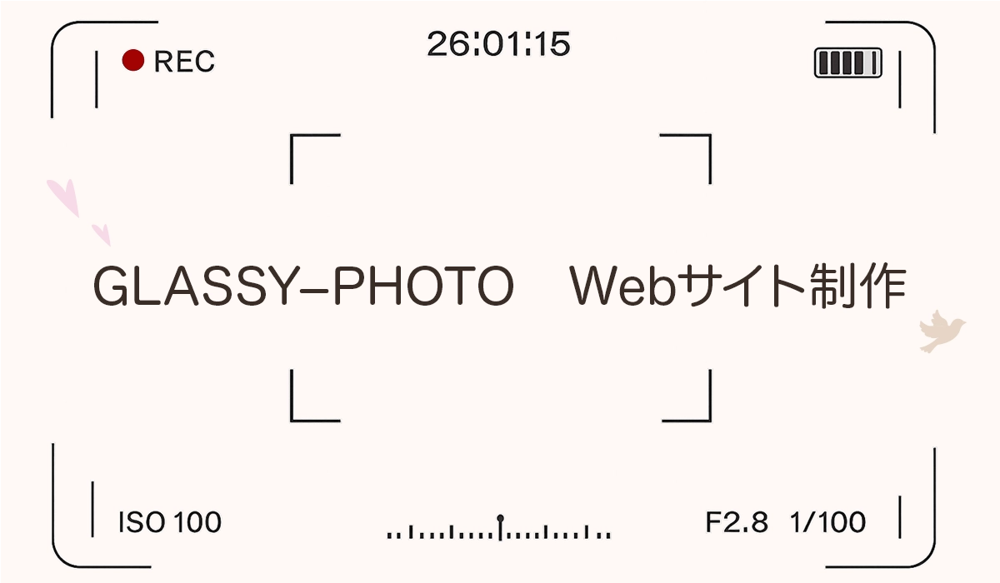
PRODUCTION NOTES / 01
デザイン / ロゴ・イラスト / HTML・CSS
GLASSY-PHOTO
ウェディングフォトグラファーの公式サイト
HIKARI MASUMOTO / DESIGN COLLECTION
11 WORKS

デザイン / ロゴ・イラスト / HTML・CSS
ウェディングフォトグラファーの公式サイト
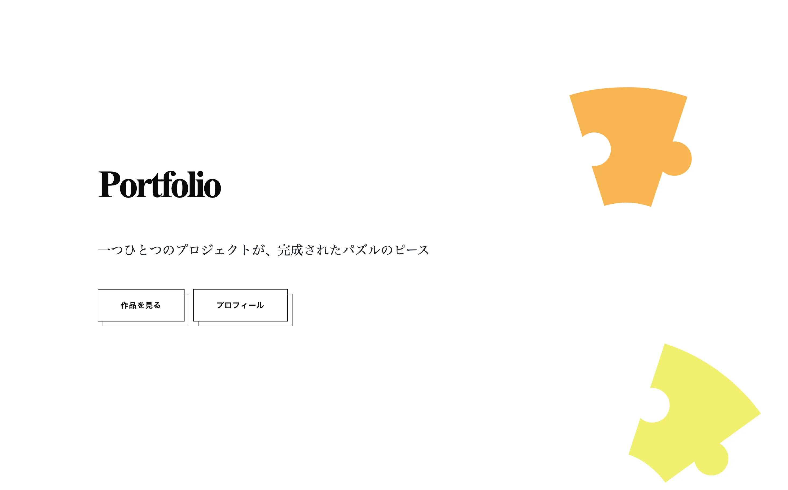
情報設計 / デザイン / JavaScript・GSAP
ポートフォリオサイト
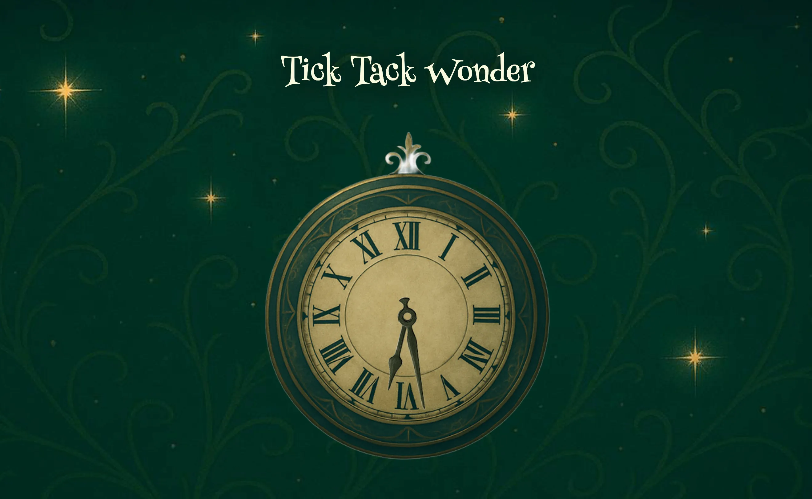
デザイン / WordPress / HTML・CSS
ブログサイト
ペルソナから考えるアプリの画面設計
大阪Web合宿 / 4人でつくった3日間の作品
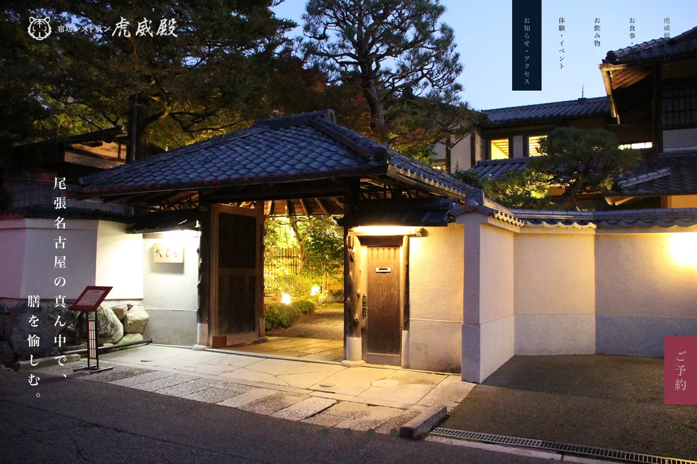
Figma / デザイン / イラスト
静けさと上質さを伝えるWebサイトデザイン
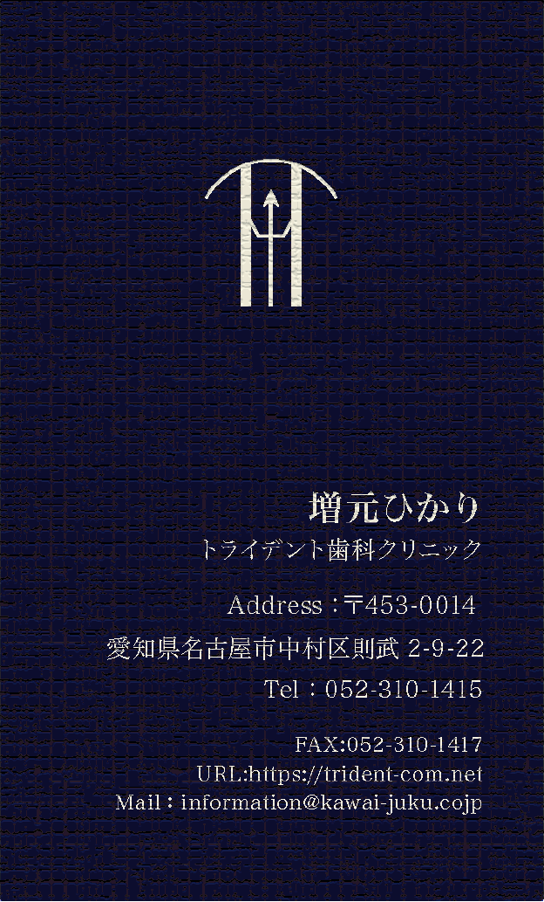
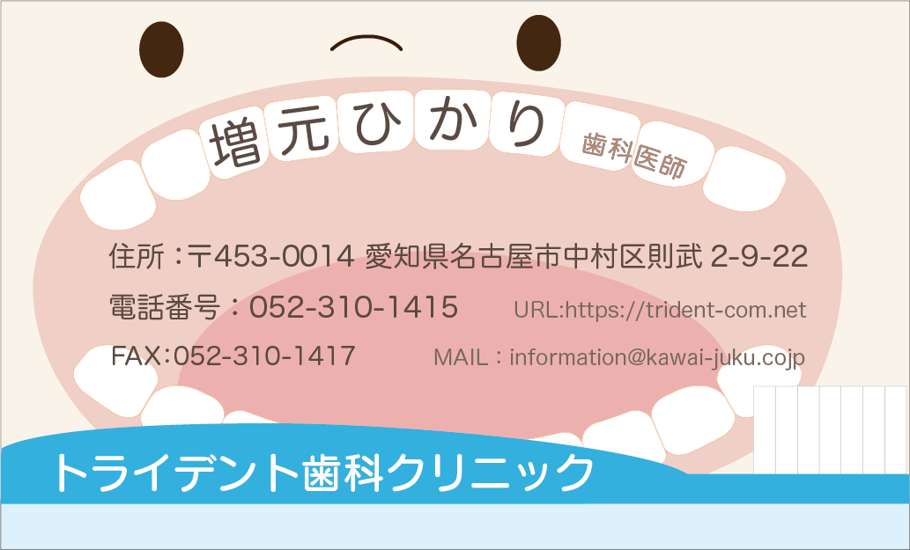
リサーチ / ロゴ制作 / 紙面設計
異なるペルソナに合わせた、ふたつの表情
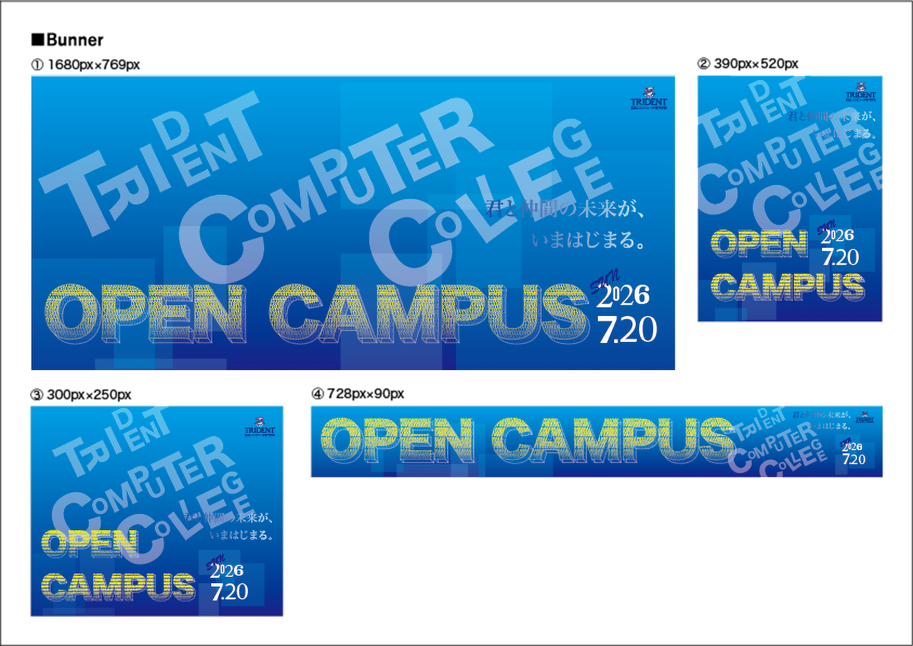
タイポグラフィ / バナーデザイン / Illustrator
文字から伝える、学校らしさと未来への期待
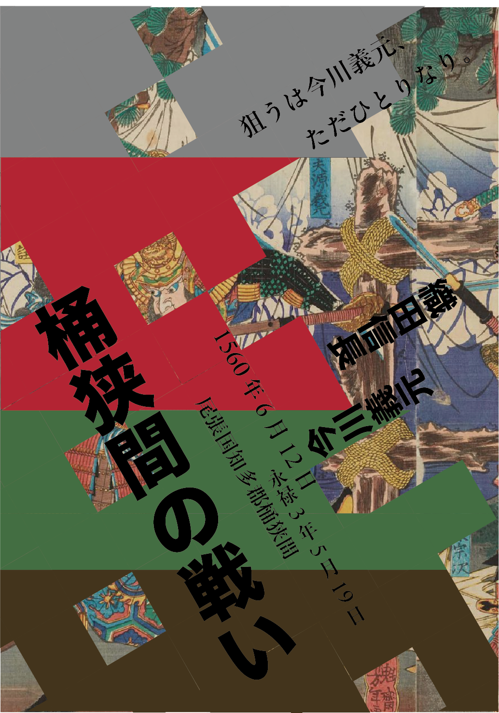
グリッド設計 / 配色設計 / Illustrator
グリッドをテーマにした宣伝フライヤー
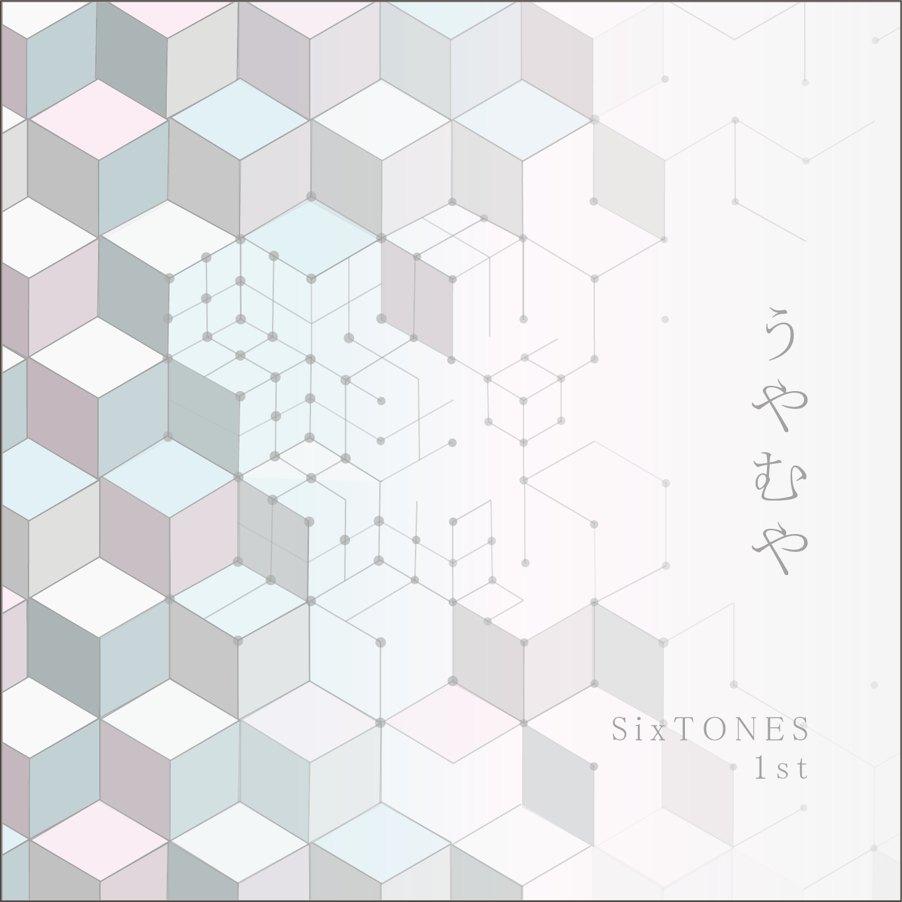
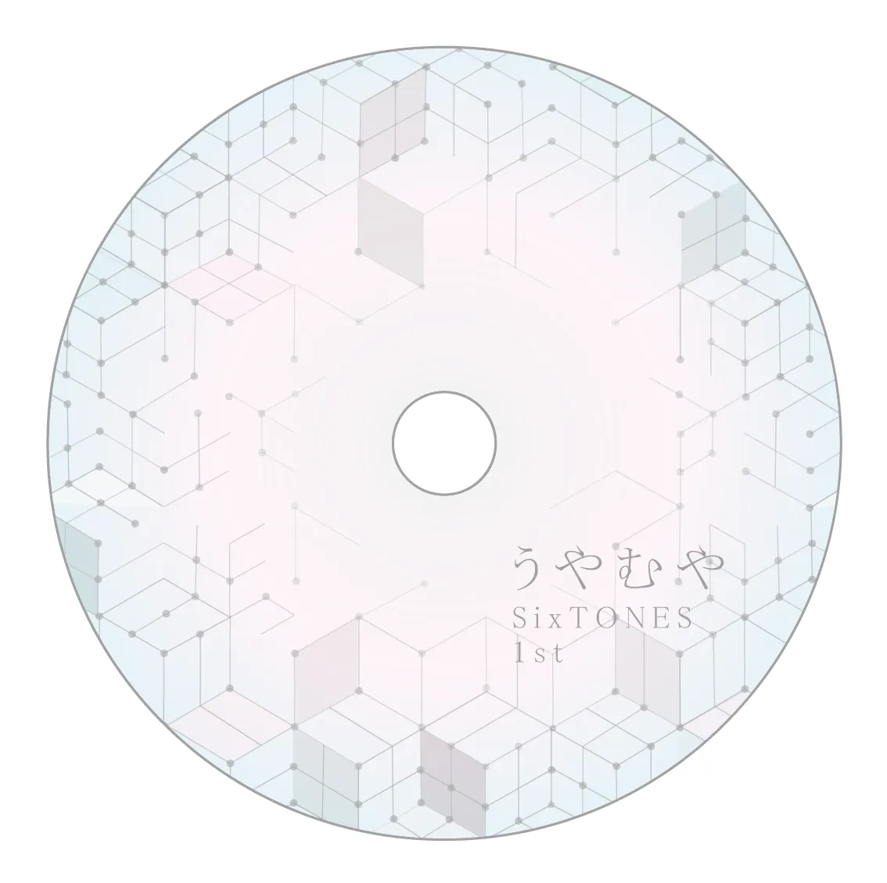
幾何学模様 / ジャケットデザイン / Illustrator
CDジャケット・円盤ジャケット
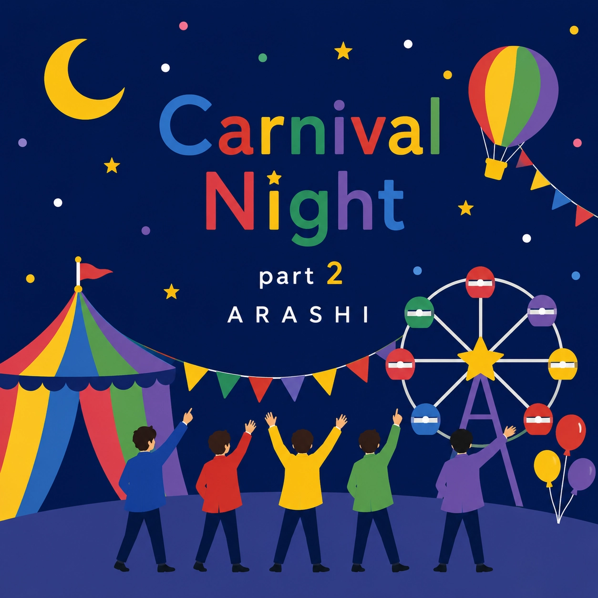
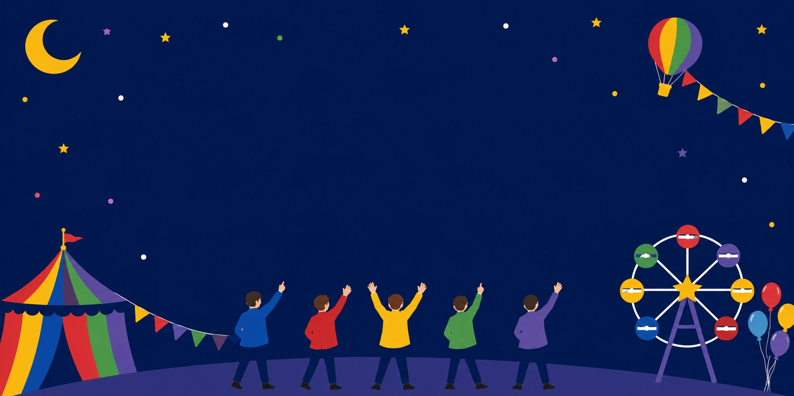
ジャケット・歌詞カード / Illustrator
CDジャケット・歌詞カード